Da agressão repetida à cirrose: as causas, os sinais e o tratamento de ascite, varizes, encefalopatia e hepatocarcinoma.
Organizada a partir da aula e dos slides do professor, com a linguagem ajustada para o estudo. A legenda de cores está na página 2.
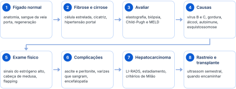
O fígado recebe quase todo o sangue que sai do intestino, limpa esse sangue, fabrica proteínas e guarda vitaminas. Ele se regenera e é dividido em segmentos com irrigação própria, o que permite retirar partes dele com segurança.
A principal célula é o hepatócito, que responde por 70 a 80% da massa do fígado. Ao redor dele correm sempre uma veia, uma artéria e uma via biliar, e no centro de cada lóbulo fica a veia centrolobular. Tudo precisa funcionar junto para o fígado armazenar, fabricar proteínas, metabolizar e limpar o sangue que passou pelo intestino.
Os hepatócitos se multiplicam por mitose. Depois de uma hepatectomia, o fígado pode voltar ao tamanho que tinha. Isso permite operar fígados muito doentes em dois tempos:
Na mitologia grega, Prometeu ficou preso numa montanha e uma águia vinha comer o fígado dele, que voltava a crescer. Desde a Antiguidade se conhecia a capacidade do fígado de se refazer.
Por volta de 1897, o cirurgião escocês Cantlie descreveu, estudando cadáveres, a linha que leva o seu nome: vai da veia hepática média (supra-hepática média) até o leito da vesícula e separa o lobo direito do esquerdo. Com ela, as hepatectomias passaram a ser feitas sem grande mortalidade na cirurgia. Na superfície, à frente, quem separa os lobos é o ligamento falciforme.
Mais tarde, o francês Couinaud dividiu o fígado em 8 segmentos; depois o segmento IV foi dividido em IVa e IVb, o que dá 9. Cada segmento recebe a sua própria tríade portal (artéria, veia porta e ducto biliar), e por isso as hepatectomias por segmento ficaram possíveis, com muito menos sangramento.
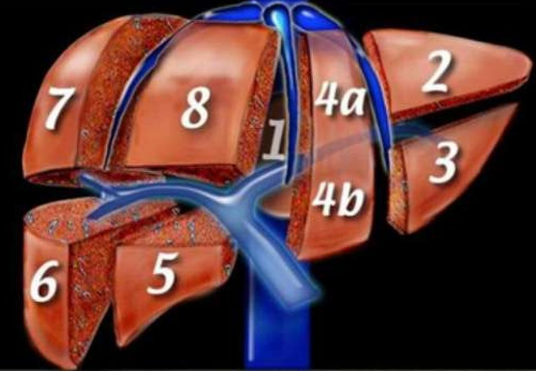
Imagem dos slides da aula. A tomografia mostra os mesmos segmentos, o que facilita a conversa com o radiologista.
O fígado é pesado e grande; se ficasse solto no abdome, qualquer trauma o lesaria com sangramento enorme. Os ligamentos o prendem ao diafragma e à parede abdominal.
O resto, 20 a 30%, vem da artéria hepática. Mesmo sendo venoso, o sangue da porta leva boa parte do oxigênio do fígado.
A veia mesentérica inferior desemboca na esplênica, que se junta à mesentérica superior e forma a veia porta, com ramos direito e esquerdo: é o sangue do intestino e do baço. A parte arterial sai do tronco celíaco: artéria hepática comum, hepática própria e ramos direito e esquerdo.
A artéria hepática tem variações comuns: a esquerda pode sair da artéria gástrica esquerda, e a direita, da mesentérica superior. Numa colecistectomia simples, quem liga essa artéria achando que é a cística pode levar o paciente à cirrose, à necrose do fígado e à morte. É preciso conhecer bem a anatomia.
Cada agressão ao fígado (álcool, vírus, gordura) deixa um pouco de cicatriz. Com o tempo, a cicatriz toma o fígado, que fica duro e cheio de nódulos: é a cirrose. O sangue passa com dificuldade, a pressão sobe na veia porta e o fígado deixa de fazer o seu trabalho.
A cirrose é o estágio final e tardio da fibrose: uma doença crônica, progressiva e irreversível, com fibrose difusa e nódulos de regeneração que distorcem a arquitetura do fígado e levam à insuficiência hepática. A fibrose é o depósito de tecido conjuntivo fibroso no parênquima. O fígado normal funciona como uma esponja, com o sangue fluindo bem; com fibrose, fica duro, cheio de nódulos, e o sangue passa com dificuldade.
Com isso o fígado perde a capacidade de produzir albumina e fatores de coagulação e de limpar as substâncias tóxicas, além de fabricar vitaminas, hormônios e proteínas.
“Se me perguntarem o que é a cirrose hepática: é uma causa irreversível da fibrose. O paciente nesse estágio não vai conseguir regredir para uma esteatose ou para o fígado normal.”
A célula estrelada é a grande vilã do início da fibrose. Ela fica ao lado do hepatócito e reage a qualquer agressão:
Como o fígado fica rígido, o sangue precisa de muito mais pressão para atravessá-lo: é a hipertensão portal. Dela saem quase todas as complicações da cirrose, que voltam nos capítulos 09 a 12.
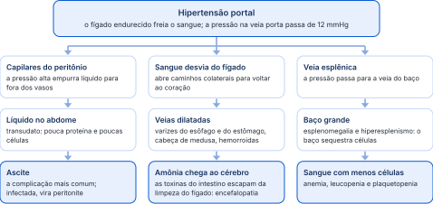
Duas perguntas: quanto o fígado já cicatrizou (elastografia, biópsia, imagem) e quanto ainda funciona (Child-Pugh e MELD, que dizem o prognóstico e a fila do transplante).
É um ultrassom especial que mede a velocidade das ondas dentro do fígado. Quanto mais enrijecido o tecido pela fibrose, maior a velocidade. Um programa do aparelho colore a onda, e o radiologista lê o grau: azul na fibrose leve, amarelo na moderada e um padrão diferente quando já é cirrose. O resultado sai de F0 (normal) a F4 (cirrose).
A classificação METAVIR gradua a fibrose (F) e a atividade inflamatória (A). Na biópsia, feita com sedação e uma agulha guiada por ultrassom, o patologista lê a lâmina; o grau dele se compara ao que o radiologista mede na elastografia.
São achados que o radiologista descreve; não precisam ser decorados. No laudo, costumam vir como “fígado com hepatopatia crônica”.
É a escala mais usada na clínica médica, no posto de saúde e no internato. Sempre que o paciente tiver algum estigma de cirrose, vale calcular. É ela que aparece na passagem de caso: “paciente hepatopata, Child A, B ou C”.
“Qual o exame para avaliar a função hepática?” Quase todo mundo responde transaminases (TGO e TGP), fosfatase alcalina e gama-GT. Errado. Função do fígado é bilirrubina, albumina e tempo de protrombina (TAP). Some ascite e encefalopatia e está pronta a tabela de Child-Pugh.
A soma classifica o paciente e dá o prognóstico: sobrevida em 1 e 2 anos e mortalidade numa cirurgia. RNI é a razão normalizada internacional, a forma padronizada de dar o tempo de protrombina.
O MELD (sigla em inglês de “modelo para doença hepática terminal”) mede a gravidade da doença crônica do fígado, estima o risco de morte em 3 meses e ordena a fila do transplante. Não se calcula de cabeça, porque usa logaritmos: põem-se os valores na calculadora. Os quatro dados que entram são creatinina, bilirrubina, RNI e sódio.
Outros fatores pesam: quem bebeu nos últimos 6 meses fica clinicamente inapto ao transplante.
Na tabela do slide, a mortalidade em 3 meses de pacientes internados sobe com o MELD: 4% abaixo de 10; 27% entre 10 e 19; 76% entre 20 e 29; 83% entre 30 e 39; e 100% a partir de 40. A fórmula do slide é 9,57 × log da creatinina + 3,78 × log da bilirrubina + 11,2 × log do RNI + 6,43; a calculadora atual acrescenta o sódio.
Três causas explicam a maioria das cirroses: álcool, vírus das hepatites B e C e gordura no fígado ligada ao metabolismo. A hepatite B passa pelo sangue e pelo sexo; quase todo adulto cura a infecção aguda, mas quem fica com o vírus pode chegar à cirrose sem sentir nada.
No Brasil, o álcool é a causa mais comum de cirrose e de transplante de fígado; depois vêm as hepatites virais crônicas (vírus B ou C) e a doença hepática esteatótica associada à disfunção metabólica, antes chamada de esteato-hepatite não alcoólica. Nos Estados Unidos, a gordura no fígado já é a maior causa de cirrose e de transplante.
O vírus da hepatite B tem material genético de DNA, uma cápsula de proteína com 20 lados e um envelope de gordura. Duas características o tornam muito transmissível: resiste até 6 meses no ambiente, e basta um único vírus para infectar. Ele circula no sangue até o fígado, gruda na membrana do hepatócito, libera o seu DNA e assume o comando da célula.
“A gente não passa para o paciente ou para o leigo que o risco de contaminação é muito baixo. Sempre falar que tem alto risco de contaminação.”
Pergunte se o paciente já recebeu transfusão e em que ano. Antes de 1993 não se testava hepatite em quem doava sangue. Anote a resposta na evolução, no prontuário.
Primeiro vem a infecção aguda. Cerca de 90% (80 a 95%) dos pacientes se curam em até 6 meses. Quem não cura cronifica, e entre os crônicos, a maioria sem sintomas, 5 a 10% chegam à cirrose. O risco de cronificar depende da idade em que a pessoa se infecta:
Estudante de medicina precisa estar com a vacina da hepatite B em dia: o risco de vocês, adultos vacinados e imunocompetentes, é o mais baixo.
A doença é silenciosa; muitas vezes só se descobre num exame de rotina ou quando já há estigma de cirrose. No começo, os sintomas são vagos: cansaço, tontura, enjoo, vômito, febre, dor abdominal (no slide, também fraqueza, perda de apetite, urina escura e icterícia). As manifestações fora do fígado da forma crônica são raras: artralgia, artrite, poliarterite nodosa, glomerulonefrite e derrame pleural.
Antígenos são partes do vírus que despertam o sistema imune; anticorpos são o que o corpo fabrica contra eles. O vírus tem três antígenos: o de superfície (HBsAg), o do núcleo (HBcAg) e o “e” (HBeAg). O mais importante é guardar que a presença do HBsAg no sangue dá o diagnóstico de hepatite B. Ele aparece cerca de 2 semanas depois da infecção, entre 2 semanas e 2 meses antes dos sintomas.
A infecção aguda é a dos primeiros 6 meses; depois disso, com HBsAg ainda positivo, é crônica.
O resto da sorologia separa infecção aguda, crônica, antiga e vacinação. É para consultar, não para decorar: no dia a dia, abre-se a tabela no celular.
Anti-HBc agudo é o anticorpo da classe imunoglobulina M; o tardio, da classe imunoglobulina G.
Ter hepatite B não significa ir para a cirrose: muita gente convive com o vírus a vida toda, sem sintomas. As fases nem sempre vêm em sequência.
Quem acompanha e trata a hepatite B é o infectologista ou o hepatologista, com ultrassom e enzimas do fígado de rotina. O tratamento é para conhecer, não para decorar.
O objetivo é suprimir a replicação do vírus e reduzir a lesão do fígado, evitando cirrose e hepatocarcinoma; é raro o HBsAg negativar. Trata-se quem tem HBeAg reagente com transaminases altas (mais de 2 vezes o normal) ou HBeAg não reagente com carga viral alta (mais de 2.000 UI/mL) e transaminases acima de 2 vezes. Também entram, seja qual for o marcador, quem tem cirrose, reativação, hepatite aguda grave, coinfecção com hepatite C ou com o vírus da imunodeficiência humana, história familiar de hepatocarcinoma, fibrose no grau 2 ou mais, quem vai receber imunossupressão ou quimioterapia e as gestantes, pelo risco de transmissão.
Os remédios, antivirais disponíveis no posto de saúde, são o entecavir, o de uso mais comum na prática, e o tenofovir. Eles não curam, mas retardam a cirrose, reduzem o câncer e melhoram a sobrevida.
A hepatite C também é um vírus do sangue, mas cronifica muito mais que a B e não tem vacina. Em compensação, tem cura com comprimidos em poucas semanas. No cirrótico por hepatite C, o risco de câncer obriga a fazer exame de imagem a cada 6 meses.
Ao contrário da B, na hepatite C a forma crônica é a mais comum: cerca de 70% dos casos agudos cronificam, e essa é a grande diferença entre as duas. É uma inflamação silenciosa e persistente; entre os crônicos, 15 a 30% chegam à cirrose em 20 anos.
A hepatite C passa pelo contato com sangue contaminado; o sexo transmite pouco, quando há fissura ou trauma com sangue. Não passa pelo leite materno, pela comida, pela água nem por abraço, beijo ou alimento compartilhado.
Como quase não dá sintomas, costuma ser descoberta já na fase crônica. O anti-HCV positivo mostra que houve contato com o vírus; a carga viral (HCV-RNA, o material genético do vírus no sangue) confirma a infecção ativa. Infecção aguda é a dos primeiros 6 meses; depois, crônica.
Cerca de 80% não têm sintomas. A incubação vai de 2 a 12 semanas, e quem tem sintoma sente fadiga, dor muscular, náusea, vômito, diarreia, desconforto no hipocôndrio direito, coceira e icterícia. Fora do fígado, muito raros: líquen plano, úlcera de córnea e linfoma de células B.
O mais importante na hepatite C é o risco de câncer de fígado.
Ultrassom ou tomografia para procurar nódulo.
O risco de descompensação é de 3 a 6% ao ano. Descompensar é piorar a cirrose: piora da ascite, sangramento de varizes do esôfago e as outras complicações dos capítulos 10 a 12. Por isso o paciente precisa estar sempre em acompanhamento com o hepatologista ou o cirurgião.
Usam-se antivirais de ação direta, que inibem a replicação do RNA do vírus, por 8 a 12 semanas. A diferença em relação à hepatite B é que a taxa de cura passa de 95%: trata uma vez e acabou. Toda unidade básica de saúde tem o teste e o remédio, e quem está na fase inicial pode ser tratado ali, sem consulta na rede especializada.
Esteatose é gordura dentro das células do fígado, cada vez mais por obesidade, diabetes, pressão alta e colesterol. No começo regride; inflamando por anos, vira cirrose e câncer.
Esteatose é o acúmulo de gordura (lipídios) nos hepatócitos; na lâmina, aparecem como pontos amarelos. Pode vir do álcool, da hepatite C ou de doenças metabólicas, como obesidade, hipertensão, diabetes e dislipidemia. Outras causas: resistência à insulina, alguns metais, drogas citotóxicas (como o metotrexato, da reumatologia), antibióticos (como a tetraciclina), o vírus da imunodeficiência humana e a doença inflamatória intestinal.
No ultrassom, a ecogenicidade é a capacidade do tecido de refletir a onda de volta ao aparelho, gerando ecos. O laudo usa quatro palavras: anecoico (preto, não reflete), hipoecoico (cinza, mais escuro que o vizinho), isoecoico (da mesma cor do vizinho) e hiperecoico (mais branco). O fígado com esteatose é hiperecoico.
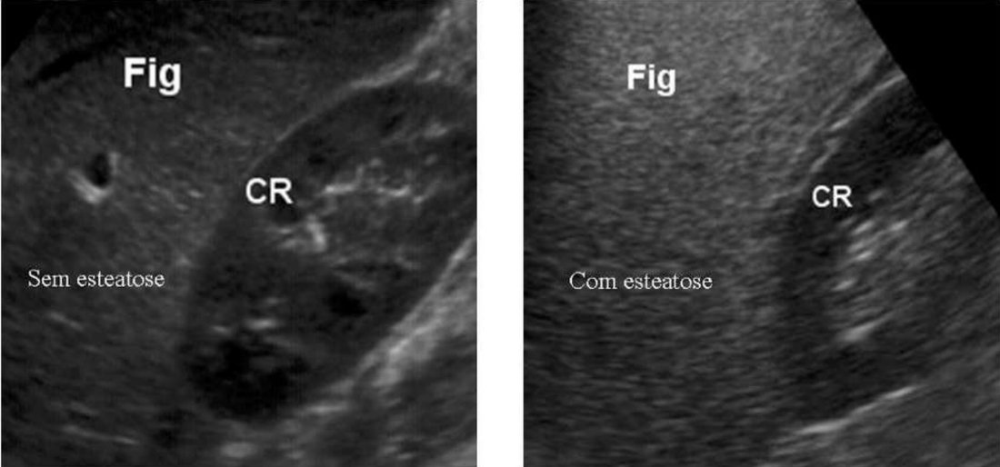
Imagem dos slides da aula.
Na tomografia, o que cai não é a onda, e sim a densidade do fígado, medida em unidades de Hounsfield. Quanto maior a unidade, mais claro o tecido; quanto menor, mais escuro. Fígado mais escuro, mais esteatose. No slide, uma diferença de mais de 10 unidades entre o baço e o fígado é muito sugestiva.
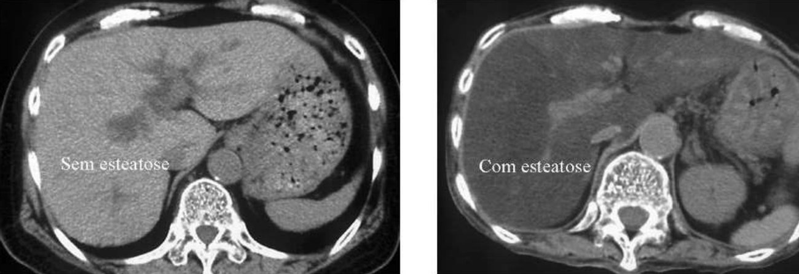
Imagem dos slides da aula. Tomografia sem contraste.
Antes chamada de esteato-hepatite não alcoólica, é a esteatose do paciente com síndrome metabólica: há gordura no fígado, pelo menos um fator de risco metabólico e nenhuma outra causa. Para a síndrome metabólica, são precisos 3 destes 5 critérios:
Primeiro, esteatose num exame de imagem. Depois, um destes três caminhos fecha o diagnóstico:
Poucos sintomas: fadiga, mal-estar e desconforto no abdome superior direito. As transaminases podem subir um pouco (2 a 5 vezes o normal), a fosfatase alcalina também (2 a 3 vezes), e a ferritina pode estar elevada.
Ferritina alta não é marcador confiável de doença do fígado: a própria gordura, a obesidade e o consumo de carne vermelha a aumentam.
Fígado saudável com esteatose pode evoluir para esteato-hepatite (a gordura inflama os hepatócitos) e daí para cirrose, que não regride; o caminho segue até o hepatocarcinoma.
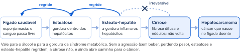
É o fígado que metaboliza o álcool. A gordura e a inflamação que a bebida causa somem em cerca de duas semanas sem beber; anos de excesso levam à cirrose, que não volta.
O álcool atravessa as membranas com facilidade: é absorvido já na boca e também no estômago, no duodeno e no cólon. Vai pelo sangue para todos os tecidos com água (cérebro, fígado, coração, rim e músculo). É metabolizado no fígado pelas enzimas álcool desidrogenase e aldeído desidrogenase, que transformam o etanol em acetato, eliminado na urina. Além do fígado, lesa coração, cérebro, pulmão, boca, esôfago, intestino e pâncreas.
A evolução é a mesma da figura do capítulo 06: fígado saudável, esteatose, esteato-hepatite e, no fim, cirrose. O metabolismo do álcool atrapalha a queima de gordura; ácidos graxos e triglicerídeos se acumulam, e o hepatócito incha com grandes gotas de gordura. A esteatose pode surgir em 2 dias de consumo excessivo.
A esteatose e a esteato-hepatite se resolvem: parando de beber, em cerca de 2 semanas o fígado se renova. Num estudo, pessoas com biópsia normal beberam 98 a 138 g de álcool por dia (cerca de seis long necks) durante 17 dias e ficaram com esteatose moderada a acentuada; duas semanas sem beber depois, a biópsia voltou ao normal. Só o cirrótico crônico não volta.
Três garrafas de cerveja de 600 mL por dia, por 10 anos, já chegam lá.
Para saber quantos gramas de álcool há numa bebida: volume em mL × teor alcoólico (%) ÷ 100. Uma garrafa de cerveja de 600 mL a 6% tem 28,8 g.
Pelos slides, os 80 g diários equivalem a 5 doses de cachaça, 3 garrafas ou 5 latas de cerveja, ou 5 taças de vinho por dia. Quem bebe só no fim de semana chega à dose da cirrose com 560 g por semana por 10 anos: 12 doses ou 6 garrafas de cerveja na sexta, no sábado e no domingo.
A conta não é tão simples: pesam a obesidade, a esteatose prévia e remédios hepatotóxicos. E a mulher degrada menos álcool: cerca de 20 g por dia, contra 30 g no homem, e por isso se afeta mais.
Na hepatite autoimune, a defesa do corpo ataca o próprio fígado, quase sempre em mulheres jovens. Na esquistossomose, um verme trava a veia porta e faz hipertensão portal, mas o fígado continua funcionando.
É rara, de causa pouco conhecida, com predisposição genética. O sistema imune passa a reconhecer os hepatócitos como estranhos e os ataca: a inflamação crônica e progressiva estimula as células estreladas e leva à fibrose. Atinge sobretudo mulheres jovens.
O início é silencioso, de semanas a meses. Metade dos pacientes não tem sintoma; a outra metade tem letargia, cansaço, icterícia, exames alterados (transaminases, gama-GT, fosfatase alcalina e bilirrubinas) e exame físico de hepatite, evoluindo para hepatopatia crônica ou cirrose. No diagnóstico, as transaminases ficam muito altas, cerca de 22 vezes (TGO) e 18 vezes (TGP) o limite normal, a gama-GT 4 vezes e a bilirrubina 8 vezes; a imunoglobulina G também fica bem aumentada.
Os autoanticorpos pesquisados são o fator antinúcleo, o antimúsculo liso, o antimicrossoma de fígado e rim tipo 1 (anti-LKM1), o anticitosol hepático (anti-LC1) e o antimitocôndria. Eles separam dois tipos, que ficam como curiosidade:
É causada pelo verme Schistosoma; no Brasil, o Schistosoma mansoni. Tem dois hospedeiros: o ser humano, onde o verme se reproduz (definitivo), e o caramujo, onde passa fases da reprodução (intermediário). O caramujo vive em córregos, lagoas e água parada. A incidência vem caindo no Brasil; a área endêmica vai da zona da mata do Rio Grande do Norte ao sul da Bahia e ao nordeste de Minas Gerais, com focos em São Paulo, Pará, Maranhão, Espírito Santo, Goiás e Paraná.
A forma hepatoesplênica crônica tem hipertensão portal, esplenomegalia, varizes do esôfago e do fundo gástrico, hiperesplenismo (anemia, leucopenia e plaquetopenia) e fígado aumentado, com crescimento do lobo esquerdo.
Na esquistossomose há hipertensão portal, mas o verme não agride diretamente os hepatócitos: a função hepática fica preservada, com TAP, RNI e bilirrubina normais.
Na fase aguda, a prednisolona vem antes do antiparasitário, até os sintomas melhorarem e por mais 48 horas (3 a 10 dias). O praziquantel entra 8 a 12 semanas depois da infecção, com prednisolona por 3 dias.
O fígado doente deixa marcas no corpo: sinais de estrógeno alto (palmas vermelhas, aranhas vasculares, mamas no homem), veias saltadas no abdome e o tremor das mãos da encefalopatia. Viu esses sinais, pense em cirrose.
Os muitos sinais do cirrótico se explicam pelo começo da aula: o fígado fabrica proteínas, vitaminas e hormônios, e a pressão portal derruba as células do sangue (capítulo 02).
O fígado doente não degrada os hormônios: sobra estrogênio (hiperestrogenismo) e falta andrógeno (hipoandrogenismo). O estrogênio dilata os vasos e dá o eritema palmar e as telangiectasias (aranhas vasculares). A mesma alteração hormonal causa ginecomastia, rarefação dos pelos (pouco pelo na perna e no braço) e atrofia dos testículos.
“Se no exame físico você vê algum desses sinais, já pensar em cirrose.”
São varizes visíveis na parede do abdome. A veia umbilical, que estava fechada desde o nascimento, se reabre (recanaliza) com o aumento da pressão da porta, e as veias epigástricas também engrossam.
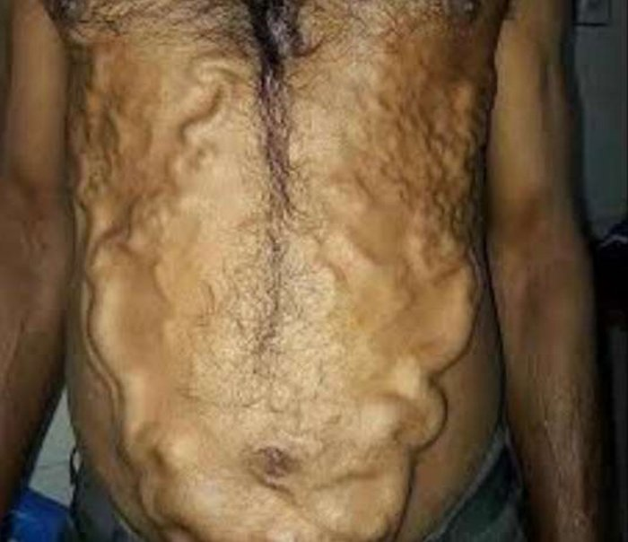
Imagem dos slides da aula.
É o sinal clássico da encefalopatia hepática. Com o paciente de braços estendidos, faz-se a extensão do punho: o examinador empurra a mão dele para trás (dorsiflexão) e solta. Positivo: a mão fica tremendo, batendo como asas. No etilista de longa data que chega confuso, esse teste se faz sempre.
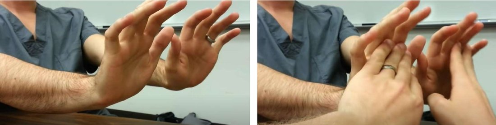
Imagem dos slides da aula.
Pelo slide, o flapping aparece a partir do grau II da encefalopatia e não é exclusivo dela: também surge na insuficiência renal e respiratória e na intoxicação por barbitúricos.
Ascite é líquido na barriga, a complicação mais comum da cirrose: pouco sal, diurético e, quando é muita, punção para esvaziar. Se o líquido infecciona, é peritonite, tratada com antibiótico.
As complicações mais importantes da cirrose são a ascite, a peritonite bacteriana espontânea, o sangramento de varizes (hemorragia digestiva alta), a encefalopatia e o hepatocarcinoma; uma por capítulo, daqui até o 13.
A ascite é a complicação mais comum da cirrose, e a cirrose é a causa de cerca de 85% das ascites. Dez anos depois do diagnóstico de cirrose, mais da metade dos pacientes (58%) já tem ascite.
Acima dela surgem a ascite e o sangramento das varizes.
Sobe um comprimido de cada vez, mantendo a proporção (80 + 200, 120 + 300), até 4 de cada.
Deixe os diuréticos sempre de manhã, no máximo até depois do almoço; senão, o paciente passa a noite inteira urinando.
A punção diagnóstica se faz na ascite de causa ainda desconhecida e no paciente desconfortável com ascite grau 2 ou 3 (no slide: todo paciente internado com ascite nova grau 2 ou 3 ou com qualquer complicação da cirrose). O líquido vai para citometria com diferencial, proteína, albumina e cultura. Pede-se sempre, junto, a albumina do sangue, para calcular o gradiente.
Albumina do sangue menos a albumina do líquido ascítico (GASA).
A contraindicação absoluta é o abdome agudo que precisa de cirurgia de urgência. As relativas são coagulopatia importante e plaquetas baixas, cirurgia prévia (sobretudo na pelve; aí se punciona guiado por ultrassom), bexiga cheia e infecção da pele ou da parede do abdome no local.
Numa unidade de pronto atendimento, uma paciente com ascite grau 3 recebeu paracentese de alívio sem que ninguém olhasse o RNI alargado e as plaquetas baixas, sinais comuns da cirrose. Fez um hematoma gigante na parede abdominal, foi para a terapia intensiva e morreu em cerca de 4 dias. Antes de qualquer paracentese, confira RNI e plaquetas.
É um procedimento simples: não precisa ser cirurgião nem especialista.
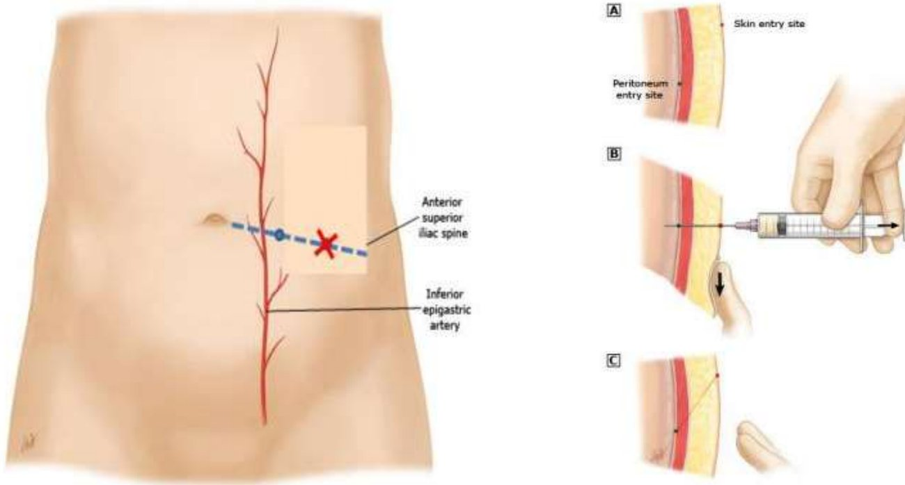
Imagem dos slides da aula.
Albumina humana a 20%, para evitar a descompensação circulatória.
Sem a reposição, quem perde mais de 5 litros de ascite evolui com hipotensão e bradicardia.
“Eu, particularmente, sempre tiro no máximo 5 litros, para evitar essa descompensação. Se o paciente estiver muito desconfortável, aí tem que repor a albumina.”
É a infecção do líquido ascítico sem uma fonte no abdome que precise de cirurgia. O diagnóstico exige polimorfonucleares (neutrófilos) acima de 250 por mm³ no líquido, cultura positiva e exclusão das outras causas de peritonite.
Uma das duas, pela veia.
Os sintomas mais comuns, numa série de 489 pacientes do slide, são febre (69%), dor abdominal (59%), estado mental alterado (54%) e dor à palpação do abdome (49%); menos comuns, diarreia (32%), íleo paralítico (30%), hipotensão (21%) e hipotermia (17%).
Cirrótico com ascite, febre e dor abdominal: colha sempre o líquido ascítico para cultura e contagem de polimorfonucleares. No sistema do hospital, o pedido costuma estar pronto.
Com a pressão alta na porta, as veias do esôfago e do estômago incham e podem estourar. É uma emergência que mata muito: estabilizar, dar remédio para baixar a pressão e antibiótico e, com o paciente estável, fechar a variz pela endoscopia.
Como a ascite, aparece com pressão portal acima de 12 mmHg. A mortalidade acompanha a disfunção do fígado: quanto pior o MELD, maior o risco de morrer no sangramento.
“Eu cansei de ver paciente morrer por causa disso no plantão. Às vezes o paciente está até internado, estoura uma variz de madrugada, ele dormindo, ninguém vê, broncoaspira, está um pouco encefalopata...”
Primeiro, estabilizar como no atendimento ao trauma: volume se necessário (hoje não é de rotina), oxigênio e proteção da via aérea, e sangue, plaquetas ou fatores de coagulação que faltarem ao cirrótico. Depois, uma droga vasoativa, que baixa a pressão nos vasos das varizes (octreotide; pelo slide, também terlipressina ou somatostatina), e antibiótico, para reduzir o risco de peritonite e de outras complicações (pelo slide, ceftriaxona, ciprofloxacino ou norfloxacino). Só com o paciente estável vem a endoscopia. O fluxograma do fim do capítulo junta os passos.
Nas varizes do esôfago, o endoscopista faz a ligadura elástica: laça a variz com um anel de borracha, e ela seca. A escleroterapia é pouco usada. As varizes do fundo do estômago, menos comuns, recebem injeção de cianoacrilato, a mesma substância da cola de secagem rápida, que fecha a variz.
Para o paciente instável, na terapia intensiva. É medida de urgência, com mortalidade altíssima. O balão do esôfago é inflado sobre as varizes com pressão maior que os 12 mmHg da porta e as tampona; o balão do estômago é insuflado para segurar o conjunto no lugar, e um peso pendurado (em geral um frasco de soro) mantém a tração. O prazo é de 24 a 48 horas: depois disso é preciso resolver o caso ou fazer a endoscopia.
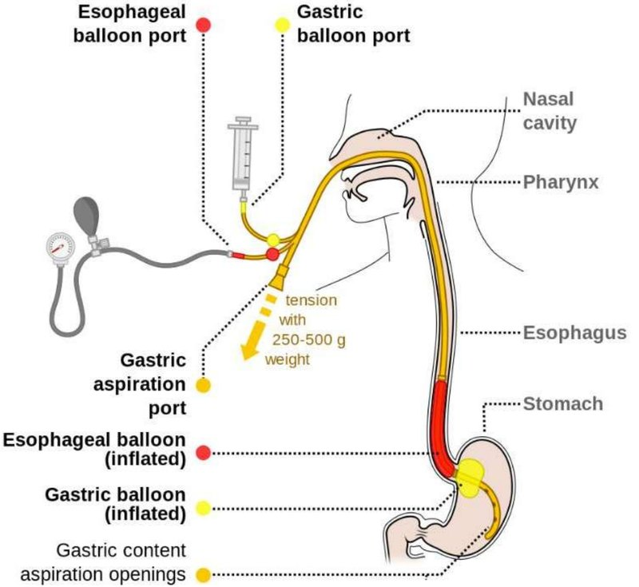
Imagem dos slides da aula.
Balão inflado além do prazo faz isquemia e necrose da parede do esôfago. Dos dois casos de balão que ele acompanhou, os dois morreram: sangramento muito ativo e coagulação toda descompensada.
Quem tem varizes comprovadas na endoscopia recebe betabloqueador: hoje o mais usado é o carvedilol, que bloqueia os receptores alfa-1, beta-1 e beta-2; o propranolol também serve. Ele baixa a pressão nas varizes e evita que rompam.
Conhecida pela sigla em inglês TIPS, liga a veia porta à veia hepática (supra-hepática) por dentro do fígado: a pressão nas varizes cai, o sangramento para e a ascite diminui. Um cateter entra pela jugular, um fio-guia atravessa da veia hepática à porta, um balão abre o caminho e um stent o mantém aberto.
É um procedimento raro: exige material especial e um médico ultraespecialista, e em Cascavel é difícil de acontecer.
O jogador Sócrates, do Corinthians e da Seleção Brasileira, era cirrótico por álcool, foi internado várias vezes e fez a derivação. Nunca deixou de beber e acabou morrendo.
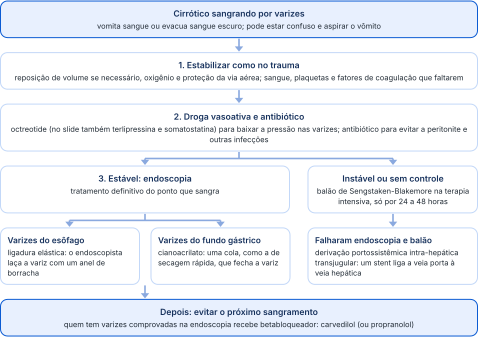
Sem a limpeza do fígado, a amônia do intestino chega ao cérebro: sonolência, confusão, coma. Procure o que desencadeou a crise e dê lactulose, um laxante que tira a amônia pelo intestino.
É a disfunção do cérebro causada pela insuficiência do fígado e pelos desvios (shunts) portossistêmicos. O sangue do intestino vem carregado de amônia, que o fígado normalmente transforma em ureia, e de outras toxinas, como mercaptanos e ácidos graxos de cadeia curta. Pelo desvio, tudo isso chega ao cérebro: causa edema cerebral, inibe a atividade elétrica depois da sinapse, estimula a produção de GABA (um neurotransmissor que inibe o cérebro) e gera estresse oxidativo e inflamação. O paciente fica lento e confuso e pode chegar ao coma. O risco no cirrótico é de 5 a 25% nos 5 anos depois do diagnóstico.
Diante de encefalopatia, procure o que a desencadeou e descarte outras causas: é encefalopatia hepática pura ou há outro fator? Os mais lembrados são drogas (o benzodiazepínico é o mais comum), álcool, sangramento de varizes, vômito, desidratação e infecção.
No paciente com ascite, pesquise também a peritonite bacteriana espontânea.
O tratamento é a lactulose, o xarope usado na constipação. É um açúcar que o intestino não absorve: transforma a amônia (NH3) em íon amônio (NH4+), forma que não é absorvida; favorece bactérias que produzem menos amônia; e, como laxante, faz o paciente evacuar.
Até as fezes ficarem líquidas, geralmente de 6 em 6 horas; meta de 2 a 3 evacuações por dia.
Nos graus 3 e 4, cuidados intensivos e jejum, para evitar broncoaspiração.
“Você chega lá com o paciente em coma e fala para a família que só vai dar um remédio para fazer cocô. Passa um dia, dois dias, ele já está bem acordado.”
O hepatocarcinoma é o câncer que nasce nas células do fígado, quase sempre num fígado cirrótico. Por isso todo cirrótico faz ultrassom a cada 6 meses. Achado cedo, pode ser operado ou levar ao transplante.
O carcinoma hepatocelular responde por 90% dos tumores que nascem no fígado. Aparece em geral na hepatopatia crônica, e a cirrose é o principal fator de risco: o cirrótico tem risco de 1 a 8% ao ano de desenvolvê-lo.
O hepatocarcinoma é diagnosticado sem biópsia, pela classificação radiológica LI-RADS (sigla em inglês do sistema de laudo das imagens do fígado), parecida com as que existem para a mama e a tireoide. LI-RADS 5 é hepatocarcinoma definitivo. Na tomografia, o tumor brilha na fase arterial (hiper-realce) e perde o contraste na fase venosa (washout, a “lavagem”); na ressonância, também há hiper-realce arterial e uma cápsula que realça na fase de equilíbrio.
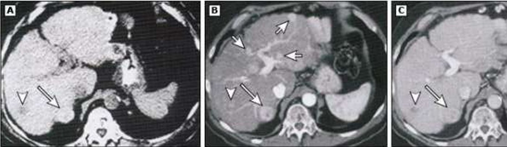
Imagem dos slides da aula.
Como em todo câncer, as diretrizes norte-americanas olham tamanho, linfonodos e metástase, além da condição clínica: o paciente aguenta cirurgia? A classificação de Barcelona (Barcelona Clinic Liver Cancer) divide o hepatocarcinoma em inicial, intermediário, avançado e terminal, pelo número de nódulos, pela função do fígado e pela condição do paciente, e liga cada estágio a um tratamento.
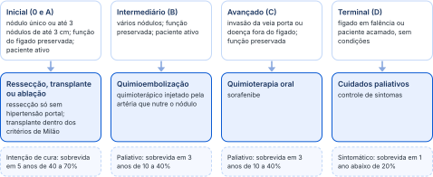
A ressecção cirúrgica pode curar, mas só é indicada quando o paciente não tem varizes do esôfago, isto é, não tem hipertensão portal, pelo risco de sangramento. A sobrevida livre de doença passa de 40%, e a sobrevida em 5 anos chega a 90%. Infelizmente, a maioria tem hipertensão portal e não aguenta a ressecção.
O transplante também pode curar, desde que o paciente cirrótico esteja dentro dos critérios de Milão:
A lista é estadual, por tipo sanguíneo e gravidade (o MELD); o Paraná tem a sua tabela. Algumas situações ganham pontuação especial, e o hepatocarcinoma é uma delas: o paciente entra com MELD 20, acima do cirrótico comum, que entra com 15. Sem fígado oferecido em 3 meses, o MELD é corrigido para 24; mais 3 meses, 28; e assim vai subindo. Também ganham pontuação especial, pelo slide, a encefalopatia, a colangite de repetição, a ascite refratária e a coceira que não cede.
Na cirurgia, depois de colocar o fígado, reconstroem-se a artéria hepática, o colédoco e a veia porta; atrás, a veia cava do paciente é aberta e unida à do doador lado a lado (anastomose laterolateral).
É a mensagem final da aula: todo cirrótico fica em rastreio, porque o risco dele é muito maior que o da população.
Todo cirrótico. Portadores de hepatite B e de hemocromatose fazem o mesmo rastreio a partir dos 40 anos.
A alfafetoproteína é um marcador tumoral, dosado no sangue.
Ou qualquer descompensação da cirrose. Em Cascavel, o serviço de referência é a Uopeccan.
O transplante é o tratamento definitivo da cirrose descompensada, quando possível:
Cirrose: estágio final da fibrose; crônica, progressiva e irreversível, com fibrose difusa e nódulos de regeneração.
Célula estrelada: a vilã da fibrose; ativada, vira miofibroblasto e produz colágeno no espaço de Disse.
Função do fígado é bilirrubina, albumina e TAP, não transaminases. Child-Pugh soma isso a ascite e encefalopatia: A 5 a 6, B 7 a 9, C 10 a 15 pontos.
MELD: creatinina, bilirrubina, RNI e sódio; 15 ou mais indica transplante.
Hepatite B: pergunte se houve transfusão e o ano (antes de 1993). O HBsAg dá o diagnóstico; crônica com 6 meses ou mais.
Hepatite C: 70% cronificam (na B, 5 a 10% dos adultos); câncer 15 a 20 vezes mais, imagem a cada 6 meses no cirrótico; cura em mais de 95% com 8 a 12 semanas.
Álcool: 80 g por dia por 10 anos levam à cirrose (3 garrafas de cerveja por dia). Esteatose e esteato-hepatite somem em cerca de 2 semanas sem beber.
Ascite (e varizes) com pressão portal acima de 12 mmHg. Grau 1, sal 2 g por dia; grau 2, mais furosemida 40 mg e espironolactona 100 mg (até 160 + 400), de manhã; grau 3, mais paracentese de alívio.
Gradiente de albumina: 1,1 ou mais é hipertensão portal (cirrose); abaixo de 1,1, doença do peritônio.
Paracentese: antes, RNI e plaquetas; puxe a pele para baixo antes da agulha. Passou de 5 litros, 8 g de albumina a 20% por litro.
Peritonite bacteriana espontânea: mais de 250 polimorfonucleares por mm³; cefotaxima ou ceftriaxona.
Varizes: 30 a 40% morrem no primeiro episódio. Balão de Sengstaken-Blakemore só por 24 a 48 horas.
Encefalopatia: o flapping é o sinal clássico. Procure o desencadeante (benzodiazepínico é o mais comum) e dê lactulose, 20 a 30 mL até fezes líquidas, para 2 a 3 evacuações por dia.
Milão: nódulo único menor que 5 cm ou até 3 nódulos menores que 3 cm, sem trombose tumoral da porta.
Todo cirrótico: ultrassom a cada 6 meses e alfafetoproteína. Encaminhar ao transplante com Child B, MELD acima de 15 ou qualquer descompensação.